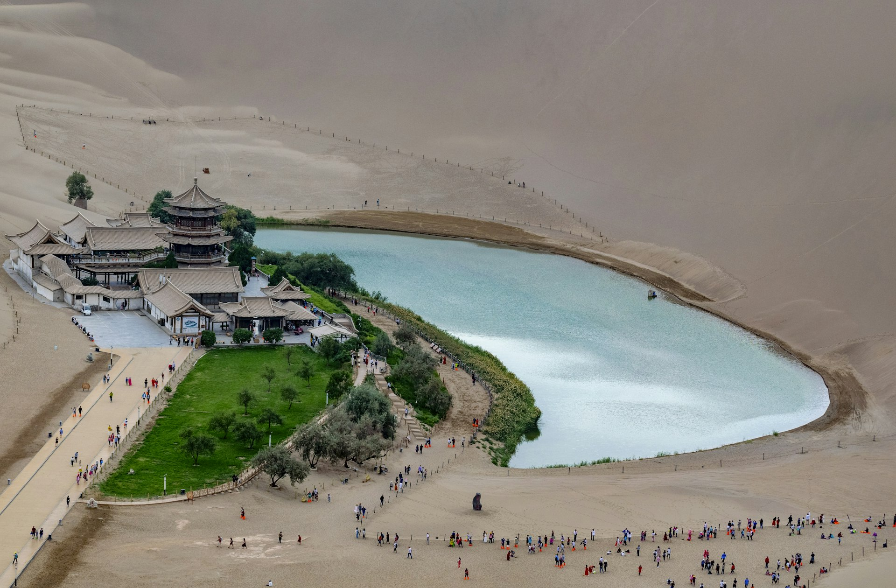
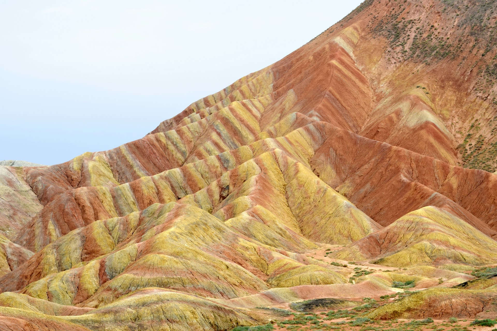

方案三
青甘大环线
Day 1–2
西宁 — 塔尔寺、东关清真大寺
Day 3
青海湖 + 茶卡盐湖 — 天空之镜
Day 4–6
敦煌 — 莫高窟、鸣沙山、玉门关
Day 7–8
嘉峪关 → 张掖七彩丹霞
Day 9–14
武威 → 兰州 → 炳灵寺石窟
敦煌白天 28–35°C（早晚凉爽） · 世界级文化：莫高窟、丝路遗址

茶卡盐湖 · 天空之镜

敦煌 · 鸣沙山月牙泉

张掖 · 七彩丹霞